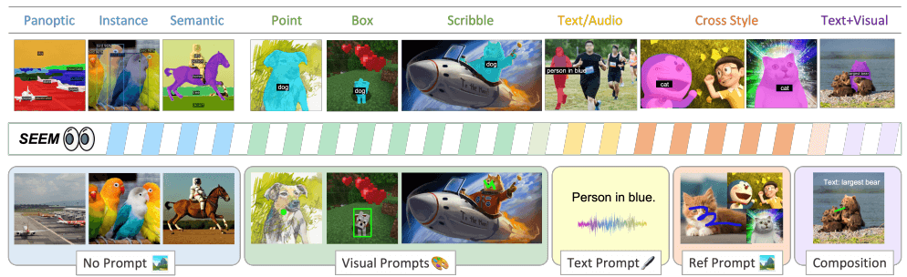
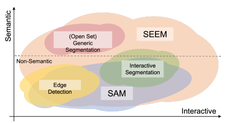
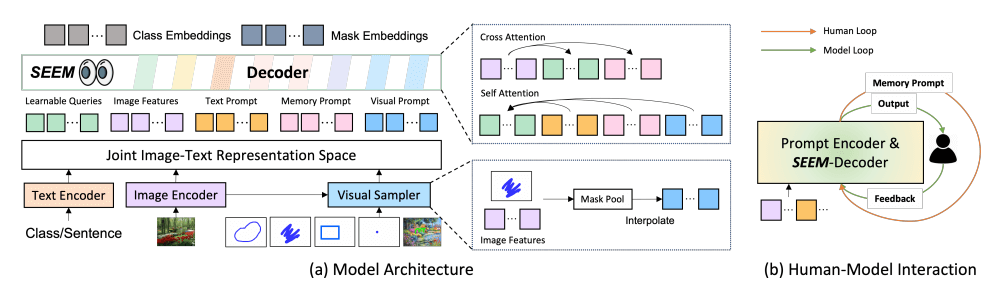

Paper-Segment Everything Everywhere All at Once
目录
资源
- 原文：[2304.06718v3] Segment Everything Everywhere All at Once (arxiv.org)
- 代码：UX-Decoder/Segment-Everything-Everywhere-All-At-Once: Official implementation of the paper “Segment Everything Everywhere All at Once” (github.com)
笔记

- No Prompt 无提示
- Panoptic 全景
- Instance 实例
- Semantic 语义
- Visual Prompts 视觉提示
- Point 点
- Box 框
- Scribble 涂鸦
- Text Prompt 文字提示
- Text/Audio 文本/声音
- Ref Prompt 参考提示
- Cross Style 交叉风格
- Composition 布局
- Text+Visual 文本+视觉
交互式人工智能系统的需求不断增长，但在视觉理解（如分割）领域里研究甚少。
受 LLM（大型语言模型）基于提示通用接口开发的启发，提出了 SEEM，一种可提示的交互式模型，用于在图像中 Segmenting Everything Everywhere all at once。四个需求：
- 多功能性，通过为不同类型的提示引入多功能提示引擎，包括点、框、涂鸦、掩码、文本和另一图像的引用区域；
- 通过学习用于视觉和文本提示的联合视觉语义空间来组成动态查询以进行推理的组成性；
- 通过结合可学习的记忆提示，通过 mask 引导的交叉注意力来保留对话历史信息的互动性；
- 通过使用文本编码器对文本查询和掩码标签进行编码以用于开放词汇分割的语义感知；
我们使 SAM 支持更多的提示，提出了一种新的提示方案，该方案具有四个重要特性。
- versatility 多功能性
- compositionality 组合性
- interactivity 交互性
- semantic-awareness 语义感知

- Interactive Segmentation 交互式分割
- Segmentation
- Close-set segmentation
- 通用分割技术包括几个子任务，包括实例分割、语义分割和全景分割，每个子任务都侧重于不同的语义级别。
- 方法无法识别训练集中不存在的对象，这将模型限制在有限的词汇大小内。
- Open-set segmentation
- 参考分割模型的目标是从语言描述中进行分割，语言描述本质上是开放的词汇
- 最近提出了许多开放式词汇分割模型，它们使用像CLIP这样的大型预训练视觉语言模型，通过冻结或微调它们的权重来转移视觉语义知识
- 参考分割模型的目标是从语言描述中进行分割，语言描述本质上是开放的词汇
- Interactive segmentation
- 交互式分割是通过交互式地获取用户输入来分割对象
- 交互类型可以采取各种形式，如点击、框、多边形和涂鸦，其中基于点击的交互模型最为普遍
- Close-set segmentation

SEEM 采用了通用的编码器-解码器架构，
- 给定输入图像 $\mathbf I\in \mathcal R^{H\times W\times 3}$
- 使用图像编码器提取图像特征 $\mathbf Z$
- 解码器基于视觉、文本和记忆提示 $\langle\mathbf P_t, {\color{Red}\mathbf P_v,\mathbf P_m}\rangle$ 的交互查询输出 $\mathbf O^m_h$（mask embeddings）和 $\mathbf O^c_h$（class embeddings）来预测 mask $\mathbf M$ 和语义概念 $\mathbf C$
- $\langle\mathbf O^m_h,\mathbf O^c_h\rangle =\mathbf{Decoder}(\mathbf Q_h;\langle\mathbf P_t,{\color{Red}\mathbf P_v,\mathbf P_m}\rangle |\mathbf Z)$
- $\mathbf Q_h$ 是可学习的查询，在训练过程中被重复用于一般分割、参考分割和交互式分割
- $\mathbf M = \mathbf{MaskPredictor}(\mathbf O^m_h)$
- $\mathbf C = \mathbf{ConceptClassifier}(\mathbf O^c_h)$
- $\langle\mathbf O^m_h,\mathbf O^c_h\rangle =\mathbf{Decoder}(\mathbf Q_h;\langle\mathbf P_t,{\color{Red}\mathbf P_v,\mathbf P_m}\rangle |\mathbf Z)$
Versatile 多功能性
当文本提示无法识别正确的片段时，这些非文本查询有助于消除用户意图的歧义。提出了一种视觉采样器（图3（a）），将所有类型的非文本查询转换为位于同一视觉嵌入空间中的视觉提示（visual prompts）：
- $\mathbf P_v=\mathbf{VisualSampler}(\mathbf s, \mathbf{\hat Z})$
- $\mathbf{\hat Z}$ 是从目标图像（即 $\mathbf{\hat{Z}}=\mathbf Z$）或参考图像中提取的特征图，视觉提示 $s\in\{\mathrm{points,box,scribbles,polygons}\}$
Compositional 组合
我们通过将视觉提示和文本提示分别与掩码嵌入 $\mathbf O^m_h$ 或类嵌入 $\mathbf O^c_h$ 匹配来选择匹配的输出索引：
Interactive 交互式的
没有引入额外的模块，只是引入了一些内存提示。这些记忆提示负责通过使用掩码引导的交叉注意层对历史信息进行编码：
- $\mathbf P^l_m=\mathbf{MaskedCrossAtt}(\mathbf P^{l-1}_m;\mathbf M_p|\mathbf Z)$
- $\mathbf M_p$ 是先前的 mask
- $\mathbf Z$ 是图像特征图，交叉关注仅在上一个 mask 指定的区域内生效
- 更新后的记忆提示 $\mathbf P^l_m$ 通过自我注意与其他提示交互，以传达当前回合的历史信息
- 这种设计可以很容易地扩展到支持多个对象的同时分割，我们将其留给未来的研究
Semantic-aware 语义感知
与以前的类认知交互切分工作（Simple Click）和并发工作（SAM）不同，我们的模型以零样本的方式为各种提示组合的掩码提供语义标签。